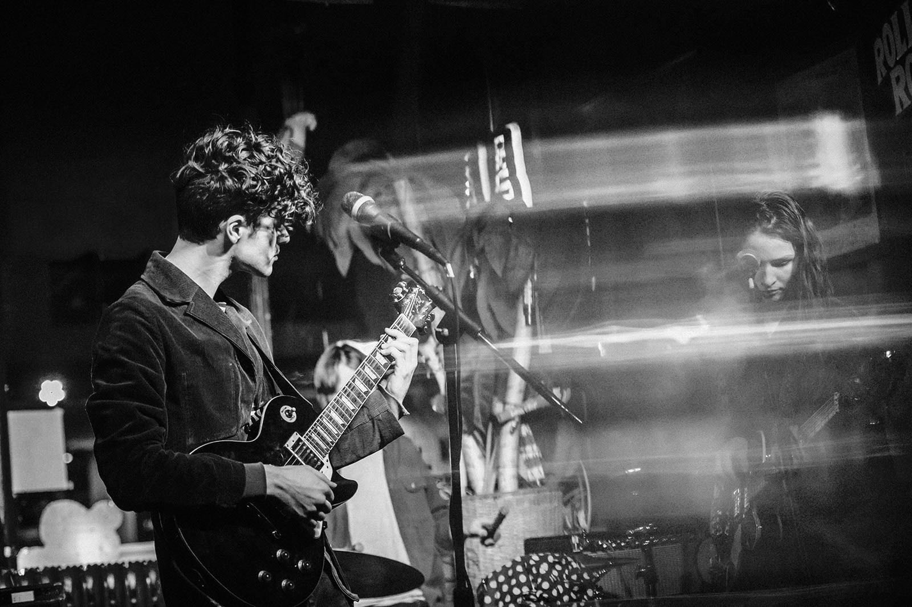

A B O U T / / L I S T E N / / S H O W S / / C O N T A C T
Verboten is a rock band from Vermont, founded in 2017 by songwriter Foster Powell, with bassist Amy Anders and drummer Daniel O’Connor. The three perform deft arrangements of Powell’s songs; their music has been called “powerful… inviting, full of surprise, lyricism and grit.”